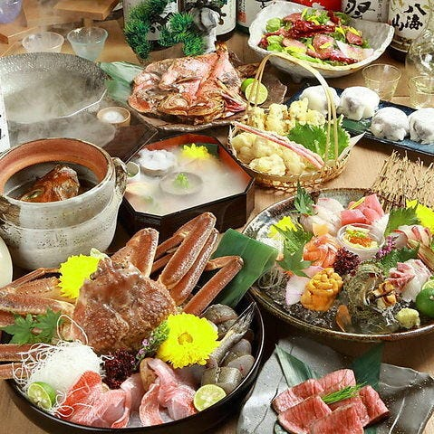
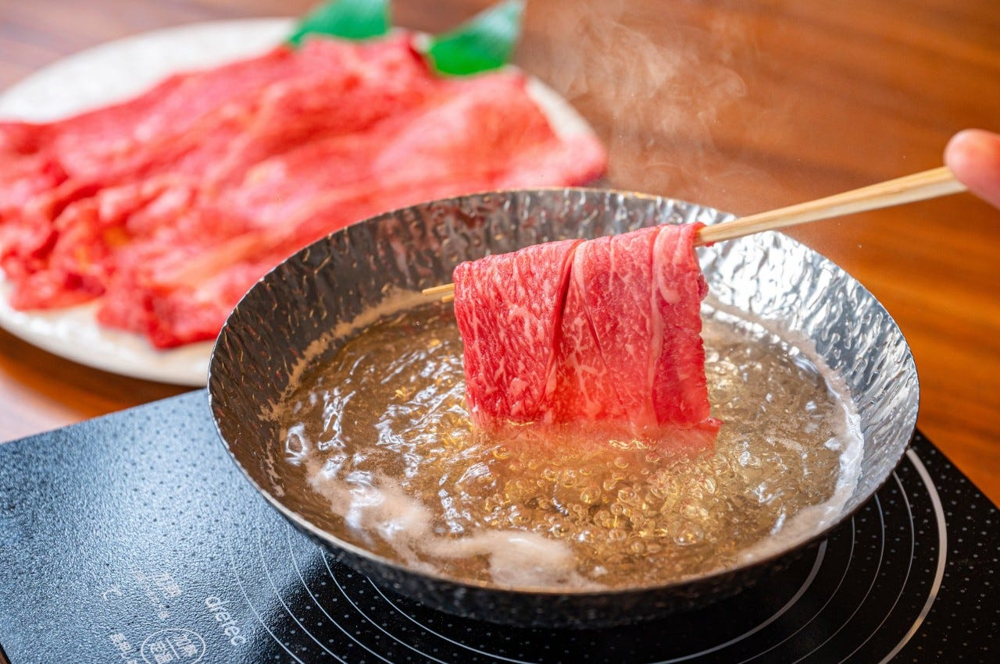
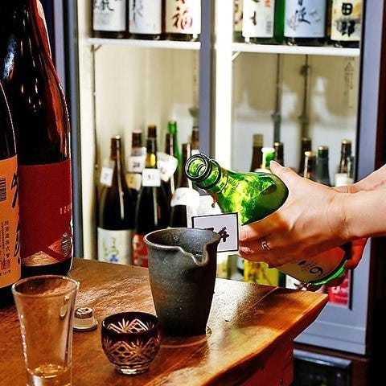
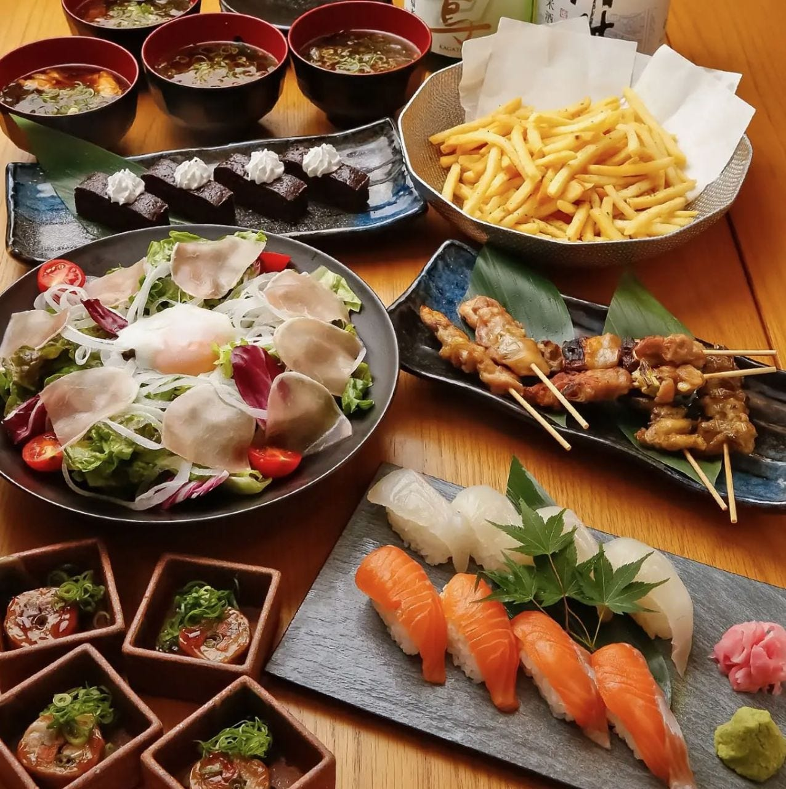
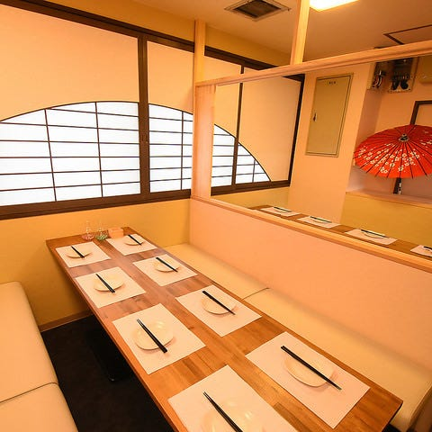
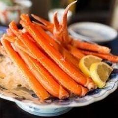
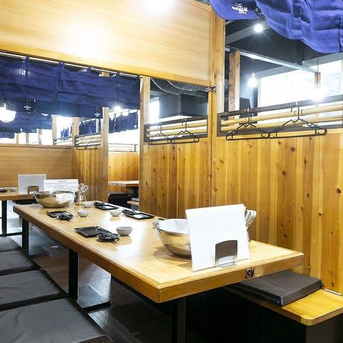
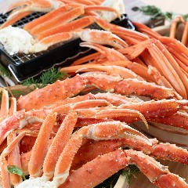
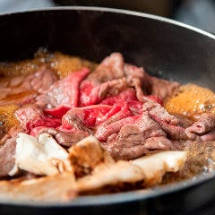

Galerie photos









Kevin, Loïc, May Nhia, Stéphanie, Estelle
Du 5 Avril au 27 Avril 2026
Restaurant spécialisé crabes et formules à volonté dans le secteur Kawaramachi (Kyoto), avec grandes capacités et réservation en ligne.









Kyoto Kanigin Kawaramacho est une adresse orientée crabes et formules repas à volonté, utile pour un groupe qui veut un seul lieu complet avec réservation web.
Conversion indicative sur base 1 EUR = 183.02 JPY (BCE du 04/03/2026). Taux variable.